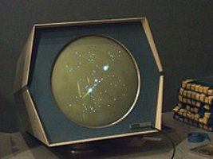
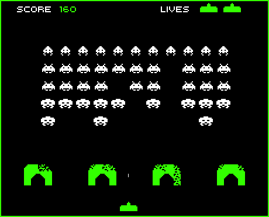

>
La historia de los videojuegos tiene su origen en la década de 1940 cuando,
tras el fin de la Segunda Guerra Mundial, las potencias vencedoras construyeron
los primeros superordenadores programables como el ENIAC, de 1946.
Los primeros intentos por implementar programas de carácter lúdico
(inicialmente programas de ajedrez) no tardaron en aparecer,
y se fueron repitiendo durante las siguientes décadas. Los primeros videojuegos
modernos aparecieron en la década de los 60 con exponentes tan
relevantes como
Spacewar!, considerado el primer juego interactivo
de ordenador. Desde entonces este mundo no ha dejado de crecer y desarrollarse
con el único límite que le ha impuesto la creatividad de los desarrolladores y
la evolución de la tecnología.
<
>
En 1972 tuvo lugar el denominado nacimiento de la industria con la llegada del mítico
Pong, que se convirtió en el primer título de la recién creada Atari y que reproducía una versión arcade del juego del ping-pong, reestructurando
por completo el negocio del entretenimiento desde ese momento en adelante.
<

>
A finales de esta decada, en 1978 se creó para TaitoSpace Invaders,
un juego que con gran influencia del éxito que Star Wars estaba cosechando por entonces, adoptó
la forma de batalla espacial.
El juego obtuvo inmediatamente un éxito de dimensiones descomunales,
fue convertido a todos los formatos importantes de la época y dio lugar a numerosas
continuaciones e infinitos clones.
No solo inició un género que resultaría esencial en el desarrollo posterior
de los videojuegos (el de los Shoot 'em up o «matamarcianos»), sino que situó
definitivamente a la industria japonesa en el lugar que le correspondía e impulsó
la fiebre de los videojuegos a nivel mundial, iniciando la que en
la literatura especializada se conoce como la Edad dorada de los videojuegos.
<